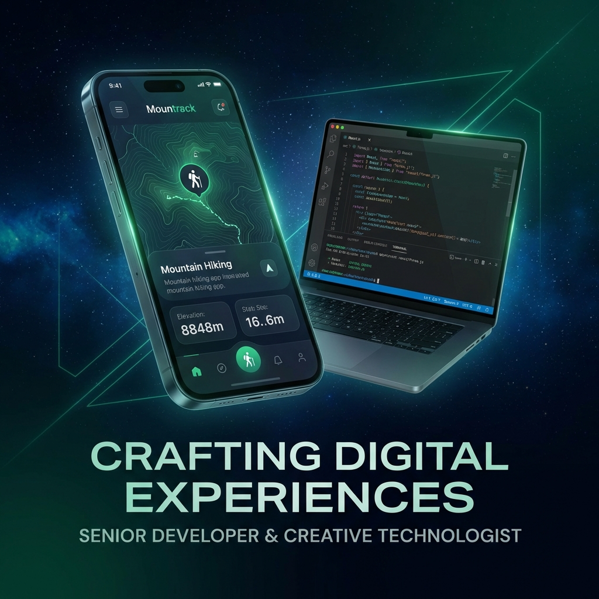

Senior Full-Stack Architect spesialis Android (Kotlin Native) & Laravel Backend. Mengintegrasikan logika rekayasa perangkat lunak yang tangguh dengan disiplin kekuatan fisik.

Menyediakan solusi rekayasa software dengan fokus pada hasil bisnis nyata, performa tinggi, dan ketahanan sistem.
Membangun aplikasi Android dengan Kotlin Native yang tetap berfungsi lancar tanpa sinyal internet, menyinkronkan data secara otomatis saat online kembali.
API Laravel yang dioptimalkan dengan struktur database relasional yang efisien, menjamin waktu respons cepat dan keamanan data yang ketat.
Mengubah alur kerja manual yang lambat menjadi sistem digital otomatis (seperti mesin estimasi harga instan), menghemat waktu dan meningkatkan penjualan.
Infrastruktur keselamatan pendakian modern dengan sinkronisasi peta offline-first, protokol SOS darurat otomatis, portal komunitas interaktif, edukasi keselamatan terintegrasi, dan panel kontrol manifest administrator real-time.
Mengubah proses penawaran manual menjadi otomatis. Calon klien mendapatkan estimasi harga kanopi/pagar secara langsung dan menjadwalkan survey lokasi terintegrasi WhatsApp.
Keseimbangan disiplin antara logika pemrograman tingkat tinggi dan kekuatan ketahanan fisik.
Software Engineering & Architecture
Bodyweight Mastery & Absolute Strength
"Kode yang tangguh dilahirkan dari pikiran yang fokus, dan pikiran yang fokus dijaga oleh tubuh yang disiplin."
Harga transparan. Tidak ada biaya tersembunyi. Harga final disepakati bersama setelah konsultasi gratis.
Website profesional, sistem estimasi otomatis, katalog produk, atau landing page bisnis yang dioptimalkan untuk konversi.
Aplikasi Android native dengan Kotlin & Jetpack Compose. Offline-first, integrasi API backend, dan desain UI yang modern & intuitif.
Sistem backend Laravel dengan database MySQL yang dioptimasi. Cocok untuk aplikasi yang butuh sinkronisasi data, autentikasi, dan manajemen konten.
Proses yang transparan dan terstruktur dari konsultasi awal hingga proyek selesai dan siap digunakan.
Ceritakan kebutuhan proyek Anda. Tidak perlu formal. Kita diskusi santai di WhatsApp untuk memahami masalah bisnis yang ingin diselesaikan.
Saya kirimkan proposal tertulis (scope pekerjaan, estimasi waktu, dan harga final). Tidak ada biaya tersembunyi. Semua transparan sebelum dimulai.
Anda mendapatkan update progress setiap 2-3 hari. Bisa minta revisi kapan saja selama proses berlangsung. Tidak perlu menunggu sampai selesai semua.
Setelah Anda puas dan menyetujui hasilnya, proyek diserahkan lengkap dengan source code. Dukungan gratis 30 hari setelah launch untuk perbaikan bug minor.
Jawaban atas pertanyaan yang sering diajukan calon klien mengenai alur kerja dan kompetensi teknis.
Tergantung kompleksitas proyek. Landing page sederhana bisa selesai dalam 3-5 hari kerja. Sistem web dengan admin panel sekitar 1-3 minggu. Aplikasi Android dengan backend API sekitar 3-8 minggu. Estimasi waktu yang akurat akan saya berikan setelah konsultasi awal.
Saya menggunakan sistem DP 50% di awal (setelah proposal disetujui) dan 50% pelunasan setelah Anda melihat dan puas dengan hasil akhir. Pembayaran via Transfer Bank atau GoPay/OVO. Tidak ada biaya tambahan atau tersembunyi di luar yang sudah disepakati.
Tentu! Revisi tidak dibatasi selama masih dalam scope pekerjaan yang sudah disepakati. Selain itu, saya memberikan garansi perbaikan bug gratis selama 30 hari setelah proyek selesai dan diserahkan. Kepuasan klien adalah prioritas utama saya.
Ya. Setelah pelunasan, seluruh source code menjadi hak milik Anda sepenuhnya. Saya akan menyerahkan proyek melalui repository GitHub privat atau file ZIP terstruktur, lengkap dengan dokumentasi cara menjalankan dan mengembangkannya lebih lanjut.
Ya, tentu. Saya melayani pengerjaan berbasis per proyek (fixed price) maupun kontrak retainer bulanan. Opsi retainer sangat cocok jika aplikasi Anda memerlukan penambahan fitur berkala, maintenance server, dan pemantauan bug secara aktif.
Saya selalu tertarik dengan proyek rekayasa software berskala tinggi atau otomatisasi bisnis yang menantang.